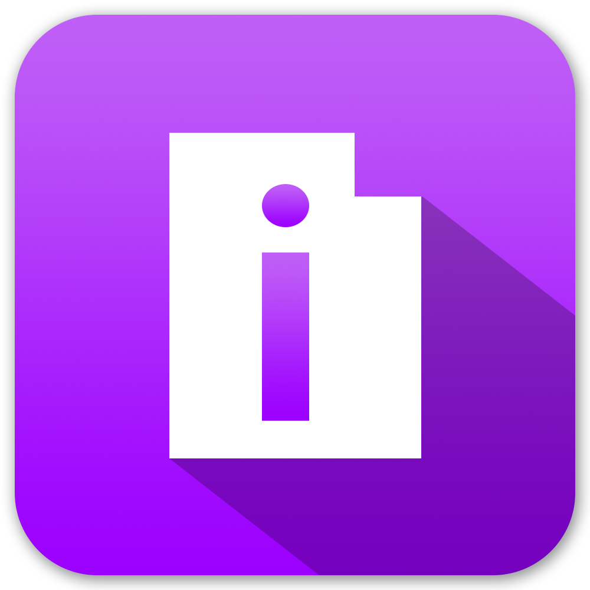

<ion-header>
        <ion-navbar color="secondary">
        
        <ion-title style="display: inline-block; vertical-align: middle; margin: 12.75px">Library</ion-title>
        </ion-navbar>
</ion-header>

<ion-content>
    <h1>Search for Some Books to Add to your Library!</h1>
    <ion-list>
        <button ion-item *ngFor="let book of books" (tap) = "openIndivBookPage (book)">
            {{book.volumeInfo.title}}
        </button>
    </ion-list>
</ion-content>
